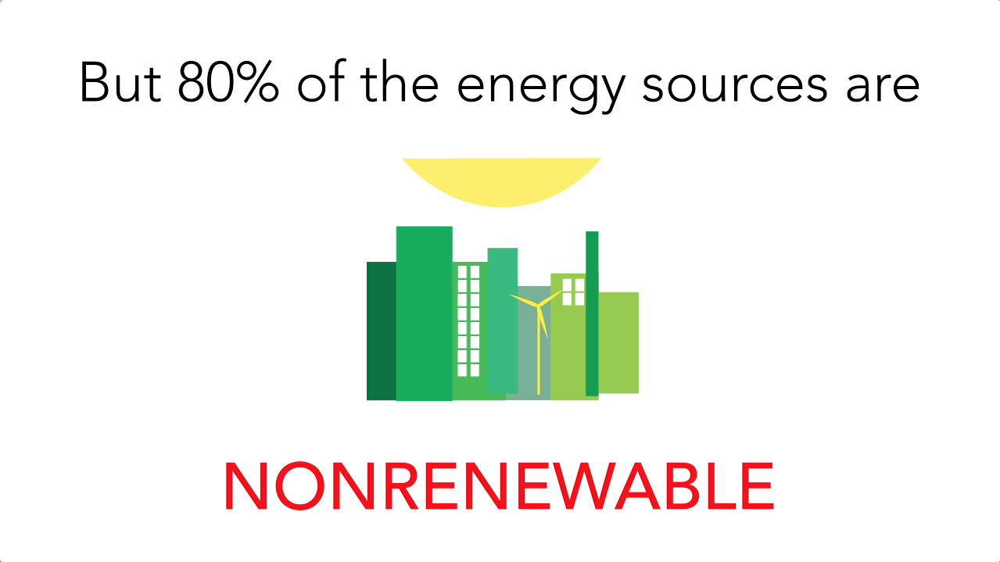
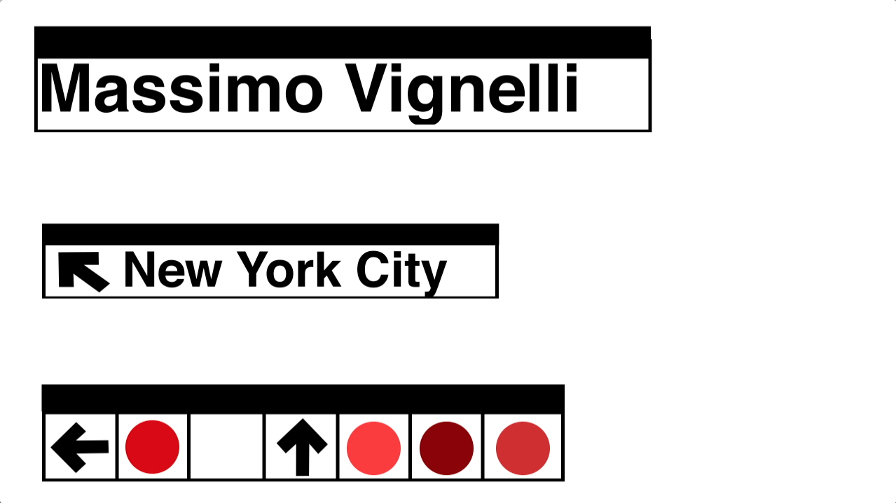
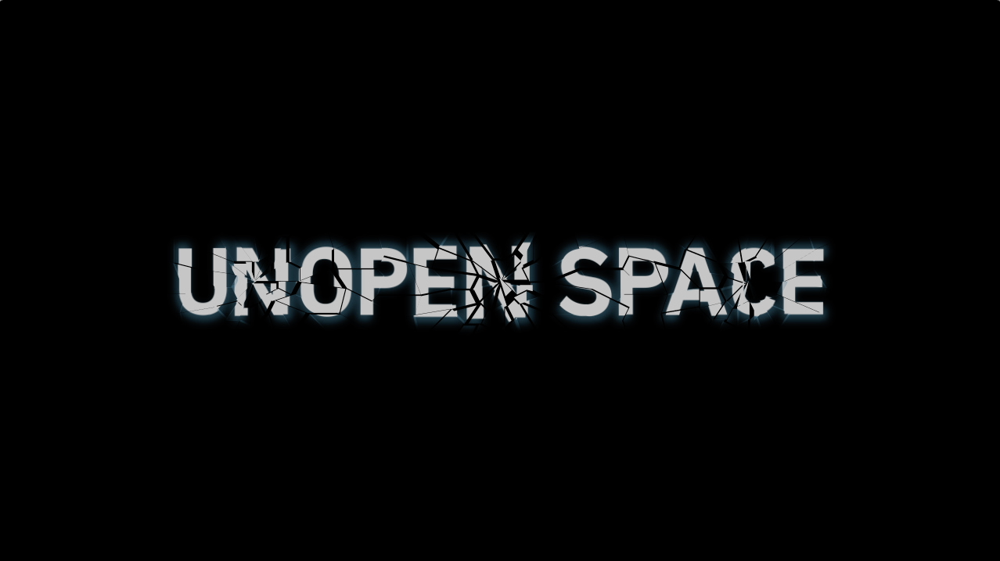
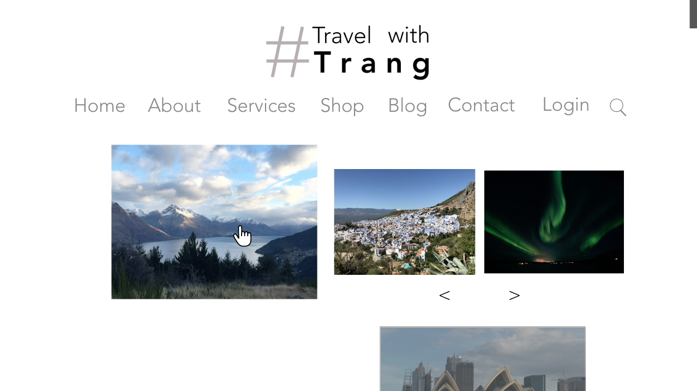
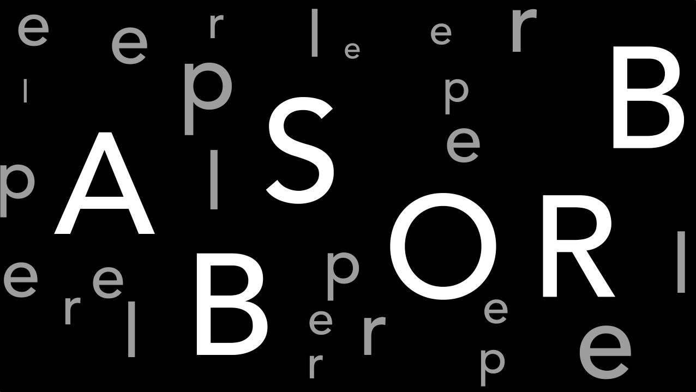
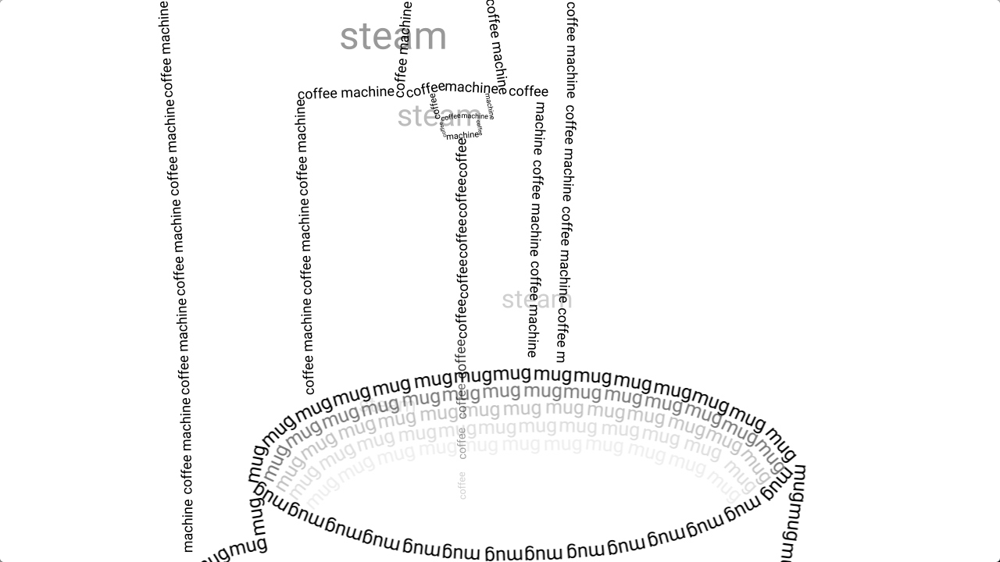
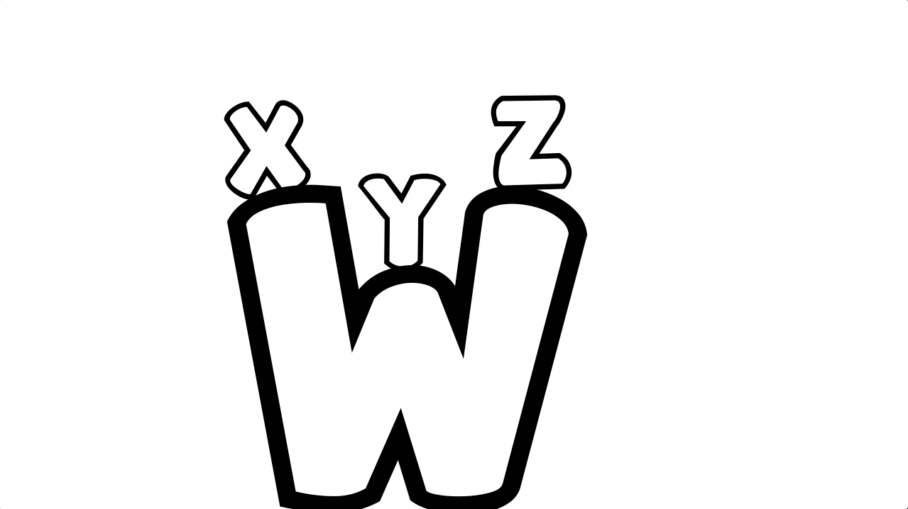

This was the final project for the class that looked at a topic in sustainability. I chose energy to help the audience become aware of the problem and some individual solutions. We could use keyframes, motion paths, multiple shape layers, graphics, color, effects, and audio.

This project was to create a motion sequence that told the legacy of a deceased artist or designer. I chose to do Massimo Vignelli because of his impressive design work during his lifetime. We could use keyframes, motion paths, multiple shape layers, graphics, and color.

This project looked at work from other motion graphics designers and learning how they created their sequence. It was a way to explore different techniques in After Effects. I chose to recreate the Black Mirror title sequence. We could use keyframes, motion paths, multiple shape layers, graphics, color, and effects.

This project looked at the motion in creating a logo and the motion of going through a website. We had to transition the logo into the website. I chose to do a travel blog and showed the motion of scrolling through the site. We could use keyframes, motion paths, multiple shape layers, and graphics.

This project studied the cause and effect of contrasting words "absorb" and "repel." I created a playful yet realistic interpretation of the two words. We could use keyframes, motion paths, and one shape layer.

This project used text to trace moving objects in everyday life. I chose to trace a coffee machine dripping coffee into a mug. We could only use keyframes and motion paths.

This project was to explore and get comfortable with using Adobe AfterEffects to create a playful motion sequence for a younger audience. We could only use keyframes and motion paths in AfterEffects.